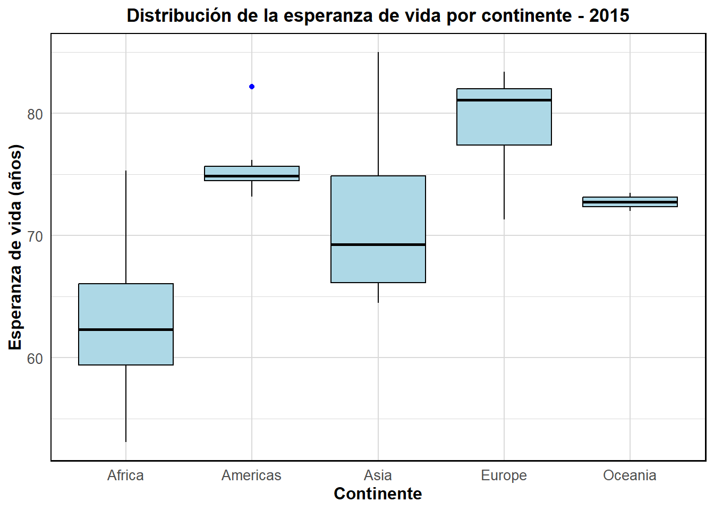

Determinantes de la esperanza de vida: análisis descriptivo
1 Enfoque investigativo y pregunta a resolver
La esperanza de vida al nacer es uno de los indicadores más reveladores del bienestar general de una sociedad, ya que refleja el número promedio de años que una persona podría vivir desde su nacimiento si las condiciones actuales de mortalidad se mantuvieran estables, este dato resume la influencia de factores sanitarios, económicos, ambientales y sociales sobre la salud poblacional, por lo que se ha convertido en una referencia clave para evaluar el desarrollo humano y las brechas entre países (Banco Mundial 2022). Durante las últimas seis décadas, el mundo ha registrado un avance significativo en este aspecto: en 1960 la esperanza de vida global era de 52,6 años, mientras que en 2022 alcanzó los 72,9 años gracias al acceso creciente a servicios médicos, mejoras en nutrición, mayor cobertura educativa y una reducción progresiva de enfermedades transmisibles (Banco Mundial 2024). Sin embargo, estos promedios globales esconden marcadas desigualdades, pues mientras en 2023 Japón reportó una esperanza de vida de 84,04 años, países como Lesoto y la República Centroafricana apenas alcanzaron los 57 años (Datosmacro 2023a, 2023b; Data Commons 2023).
Estas diferencias reflejan que la longevidad no está determinada solo por avances médicos, sino por múltiples condiciones estructurales que afectan de forma desigual a las poblaciones. La Organización Mundial de la Salud advierte que la pobreza puede reducir la esperanza de vida en más de 30 años, lo cual demuestra cómo los factores socioeconómicos se convierten en barreras reales para acceder a una vida larga y saludable (EFE 2025). En ese contexto, variables como la prevalencia del VIH/SIDA, la income composition of resources, los años promedio de estudio y la mortalidad adulta podrían estar relacionadas con la esperanza de vida, pues reflejan distintas dimensiones del desarrollo humano y las condiciones sociales de los países. Comprender cómo interactúan entre sí y cuál es su posible efecto combinado resulta clave para explorar las diferencias en longevidad a nivel global. Por tanto, surge la siguiente pregunta de investigación:
¿Cuál es el efecto conjunto de la prevalencia de VIH/SIDA, la composición del ingreso y la mortalidad adulta sobre la esperanza de vida en los países, tomando como referencia el año 2015 y desde un enfoque de análisis multivariado?
2 Relevancia tématica y objetivos de investigación
Hablar de esperanza de vida es hablar de las condiciones que hacen posible vivir más y mejor. Aunque los promedios globales han mejorado en las últimas décadas, la realidad es que no todos los países avanzan al mismo ritmo, y las desigualdades siguen marcando profundas diferencias en cuánto tiempo vive una persona según dónde nace y en qué condiciones vive. Uno de los factores que más ha impactado la longevidad en ciertas regiones ha sido el VIH/SIDA. En países como Eswatini, la epidemia provocó una caída brutal en la esperanza de vida, pasando de 61 a 32 años en apenas una década (UNAIDS 2022). Aunque los avances médicos han reducido las muertes por SIDA en más de un 69% desde 2004 y hoy muchas personas tienen acceso a tratamiento antirretroviral, el virus sigue cobrando una vida cada minuto en el mundo (unaids2023global?).
Pero no se trata solo de salud, la desigualdad económica también influye de forma directa en cuántos años puede vivir alguien. Según la OMS, la diferencia de esperanza de vida entre los países más ricos y más pobres supera los 30 años (Organization 2023). Incluso dentro de una misma ciudad, como Santiago de Chile o Ciudad de México, se han encontrado diferencias de hasta 18 años entre barrios ricos y pobres (Bilal et al. 2020). Esta realidad se repite en todo el mundo: en Estados Unidos, el 1% más rico puede vivir hasta 15 años más que el 1% más pobre (Chetty et al. 2016). Y si hay un indicador que refleja de forma cruda la fragilidad estructural de una población es la mortalidad adulta, es decir, las muertes entre los 15 y 60 años. En países como Japón, la probabilidad de morir en esa etapa de la vida es menor al 3%, mientras que en países como Lesoto o Sierra Leona puede superar el 47% (Organization 2019). Estas diferencias evidencian que millones de jóvenes y adultos en el mundo aún enfrentan condiciones de vida que limitan seriamente sus posibilidades de alcanzar la vejez, ya sea por enfermedades transmisibles, mortalidad prematura, violencia o falta de acceso a servicios básicos de salud y protección social (Organization 2019).
En conjunto, la esperanza de vida se configura como una expresión compleja de las condiciones sociales, económicas y sanitarias que atraviesan las poblaciones. Más allá del acceso a servicios médicos, su evolución refleja cómo una sociedad gestiona la distribución del ingreso, la cobertura en salud y la equidad en las oportunidades de vida. Estos factores no operan de manera aislada, sino que se articulan estructuralmente, condicionando el bienestar y la longevidad de millones de personas. Por ello, comprender sus interacciones resulta fundamental no solo para explicar las disparidades actuales, sino para orientar políticas públicas más integrales y efectivas. En este estudio, se ha decidido tomar como referencia el año 2015, ya que corresponde al último periodo con información completa y homogénea en la base de datos empleada, antes de que los registros comenzaran a mostrar ausencias significativas o interrupciones. Además, 2015 marca un hito relevante en términos de política global, al coincidir con el cierre de los Objetivos de Desarrollo del Milenio (ODM) y el inicio formal de la agenda de los Objetivos de Desarrollo Sostenible (ODS), lo que permite contextualizar los hallazgos dentro de un momento clave de transición internacional en salud y desarrollo (BBVA 2025). Partiendo de esta base, el presente estudio se enfocará en analizar el efecto conjunto de tres determinantes críticos —la prevalencia de VIH/SIDA, la composición del ingreso y la mortalidad adulta— sobre la esperanza de vida, a través de un enfoque de análisis multivariado. Los objetivos que guiarán este estudio son los siguientes:
Objetivo general
- Analizar la esperanza de vida global en el año 2015, a partir de una muestra representativa de países, aplicando técnicas de estadística descriptiva, inferencial y regresión lineal para identificar patrones, estimar parámetros poblacionales y evaluar el efecto de variables socioeconómicas y sanitarias sobre la longevidad.
Objetivos específicos
Imputar los valores faltantes de la base de datos original y seleccionar una muestra aleatoria de 50 países para el año 2015, con el fin de trabajar con un conjunto de datos limpio y representativo.
Describir estadísticamente la variable respuesta (esperanza de vida) y las variables predictoras seleccionadas, aplicando medidas descriptivas e inferenciales, incluyendo el cálculo de intervalos de confianza y comparaciones entre países desarrollados y en desarrollo.
Ajustar e interpretar un modelo de regresión lineal múltiple, para analizar el efecto conjunto de factores socioeconómicos y sanitarios sobre la esperanza de vida.
3 Principales variables que delimitan el análisis
| Variable | Tipo | Escala | Escala de medición | Descripción |
|---|---|---|---|---|
| Life expectancy | Cuantitativa continua | Años | Razón | Número promedio de años que se espera que viva una persona al nacer. |
| HIV/AIDS | Cuantitativa continua | Porcentaje (%) | Razón | Porcentaje de personas (15–49 años) infectadas por VIH/SIDA. |
| Income composition of resources | Cuantitativa continua | Índice entre 0 y 1 | Razón | Índice que refleja el acceso a recursos económicos, entre 0 (bajo) y 1 (alto). |
| Adult Mortality | Cuantitativa discreta | Muertes por 1000 habitantes | Razón | Número de muertes entre adultos (15–60 años) por cada 1000 habitantes. |
Las variables seleccionadas en este estudio fueron elegidas por su capacidad explicativa frente al comportamiento de la esperanza de vida en distintos países, abarcando tanto dimensiones sanitarias como socioeconómicas. En este análisis, la variable dependiente es Life expectancy, mientras que las variables explicativas son HIV/AIDS, Income composition of resources y Adult Mortality, cada una de ellas aporta elementos fundamentales para entender los niveles de longevidad, ya sea por el impacto de enfermedades infecciosas, las condiciones económicas o los riesgos de mortalidad en edades productivas.
Desde el punto de vista estadístico, todas estas variables son cuantitativas, ya que expresan valores numéricos que pueden ser medidos y comparados, lo cual permite aplicar herramientas estadísticas como la regresión lineal múltiple, el análisis de correlación y el cálculo de medidas de dispersión o tendencia central, aprovechando su naturaleza numérica para obtener una medición objetiva, precisa y adecuada que facilite el análisis riguroso de las relaciones entre las variables del estudio.
Las variables Life expectancy, HIV/AIDS e Income composition of resources son cuantitativas continuas, ya que pueden adoptar valores dentro de un rango amplio con decimales, por ejemplo una esperanza de vida de 72.6 años o una prevalencia de VIH de 3.4%.En cambio, Adult Mortality se considera una variable cuantitativa discreta, ya que representa el número de muertes por cada mil habitantes y proviene de un conteo de eventos, lo que implica que solo puede tomar valores enteros. Aunque se expresa como una tasa estandarizada, su naturaleza original se basa en recuentos individuales, por lo que estadísticamente conserva su clasificación discreta.
En cuanto a la escala de medición, todas operan bajo una escala de razón, lo que significa que poseen un cero absoluto y permiten establecer comparaciones proporcionales. Esto habilita afirmaciones como que un país con 60 años de esperanza de vida vive el doble que uno con 30, o que una prevalencia de VIH del 4% duplica la de un país con 2%.
Adicionalmente, se emplearán otras variables para análisis categóricos que permitan estudiar diferencias por continente y estatus de desarrollo, ambas clasificadas como variables cualitativas nominales, ya que agrupan a los países en categorías sin un orden inherente. Si bien estas variables no forman parte del modelo de regresión que se busca plantear, se utilizarán como enfoques comparativos para analizar cómo varían las variables predictivas seleccionadas en función del contexto geográfico y del nivel de desarrollo de los países. Su uso estará centrado en el análisis estadístico descriptivo y en el planteamiento de intervalos de confianza por grupo, lo que permitirá complementar la interpretación general con comparaciones entre categorías relevantes del conjunto de datos.
Esta clasificación de las variables es un paso esencial para asegurar la validez del análisis, ya que permite elegir las herramientas estadísticas adecuadas y garantizar que las conclusiones extraídas se basen en datos correctamente tratados. Además, el enfoque integral que resulta de combinar variables sanitarias y socioeconómicas permite comprender la esperanza de vida no como un fenómeno aislado, sino como el reflejo de múltiples condiciones estructurales que afectan a las poblaciones de manera simultánea y diferenciada según el contexto de cada país.
4 Población y muestra del estudio
La población objetivo de este estudio corresponde a los 193 países incluidos en la base de datos del Observatorio Mundial de la Salud (GHO) de la Organización Mundial de la Salud (OMS). Este conjunto recopila información de diversos indicadores sociales, económicos y sanitarios relacionados con la esperanza de vida, con registros disponibles entre los años 2000 y 2015. La base original contiene 2938 observaciones y 22 variables, aunque la cantidad de datos por país y por año varía según la disponibilidad de información, puesto que se identificaron valores faltantes en varias variables numéricas, ya que algunos países no contaban con registros completos. Por ello, se decidió reemplazar los valores ausentes usando el método de imputación de datos a partir de la mediana, con el fin de conservar la mayor cantidad posible de registros y evitar sesgos que podrían surgir al eliminar filas incompletas. Esta técnica es adecuada porque la mediana no se ve afectada por valores extremos y ayuda a mantener la estructura general del conjunto de datos. A continuación se muestra un resumen de caracteristicas relevantes de la población:
## Rows: 2,938
## Columns: 22
## $ Country [3m[38;5;246m<chr>[39m[23m "Afghanistan", "Afghanistan", "Afghanis…
## $ Year [3m[38;5;246m<dbl>[39m[23m 2015, 2014, 2013, 2012, 2011, 2010, 200…
## $ Status [3m[38;5;246m<chr>[39m[23m "Developing", "Developing", "Developing…
## $ `Life expectancy` [3m[38;5;246m<dbl>[39m[23m 65.0, 59.9, 59.9, 59.5, 59.2, 58.8, 58.…
## $ `Adult Mortality` [3m[38;5;246m<dbl>[39m[23m 263, 271, 268, 272, 275, 279, 281, 287,…
## $ `infant deaths` [3m[38;5;246m<dbl>[39m[23m 62, 64, 66, 69, 71, 74, 77, 80, 82, 84,…
## $ Alcohol [3m[38;5;246m<dbl>[39m[23m 0.01, 0.01, 0.01, 0.01, 0.01, 0.01, 0.0…
## $ `percentage expenditure` [3m[38;5;246m<dbl>[39m[23m 7127962362, 7352358168, 7321924272, 781…
## $ `Hepatitis B` [3m[38;5;246m<dbl>[39m[23m 65, 62, 64, 67, 68, 66, 63, 64, 63, 64,…
## $ Measles [3m[38;5;246m<dbl>[39m[23m 1154, 492, 430, 2787, 3013, 1989, 2861,…
## $ BMI [3m[38;5;246m<dbl>[39m[23m 19.1, 18.6, 18.1, 17.6, 17.2, 16.7, 16.…
## $ `under-five deaths` [3m[38;5;246m<dbl>[39m[23m 83, 86, 89, 93, 97, 102, 106, 110, 113,…
## $ Polio [3m[38;5;246m<dbl>[39m[23m 6, 58, 62, 67, 68, 66, 63, 64, 63, 58, …
## $ `Total expenditure` [3m[38;5;246m<dbl>[39m[23m 8.16, 8.18, 8.13, 8.52, 7.87, 9.20, 9.4…
## $ Diphtheria [3m[38;5;246m<dbl>[39m[23m 65, 62, 64, 67, 68, 66, 63, 64, 63, 58,…
## $ `HIV/AIDS` [3m[38;5;246m<dbl>[39m[23m 0.1, 0.1, 0.1, 0.1, 0.1, 0.1, 0.1, 0.1,…
## $ GDP [3m[38;5;246m<dbl>[39m[23m 5.842592e+07, 6.126965e+08, 6.317450e+0…
## $ Population [3m[38;5;246m<dbl>[39m[23m 33736494, 327582, 31731688, 3696958, 29…
## $ `thinness 1-19 years` [3m[38;5;246m<dbl>[39m[23m 17.2, 17.5, 17.7, 17.9, 18.2, 18.4, 18.…
## $ `thinness 5-9 years` [3m[38;5;246m<dbl>[39m[23m 17.3, 17.5, 17.7, 18.0, 18.2, 18.4, 18.…
## $ `Income composition of resources` [3m[38;5;246m<dbl>[39m[23m 0.479, 0.476, 0.470, 0.463, 0.454, 0.44…
## $ Schooling [3m[38;5;246m<dbl>[39m[23m 10.1, 10.0, 9.9, 9.8, 9.5, 9.2, 8.9, 8.…## Número total de observaciones: 2938## Número total de variables: 22## Variables cuantitativas: 20## Variables cualitativas: 2Para el desarrollo del análisis estadístico, se utilizó información correspondiente al año 2015 y se seleccionó una muestra de 50 países a partir de la base de datos previamente depurada, aplicando un muestreo aleatorio simple sin reemplazo, lo que significa que cada país tuvo la misma probabilidad de ser seleccionado y no podía aparecer más de una vez en la muestra. Este procedimiento se empleó con el objetivo de asegurar una selección imparcial, evitar sesgos sistemáticos y facilitar un análisis representativo que permita explorar de manera confiable el comportamiento de la esperanza de vida en relación con las variables explicativas incluidas en el modelo durante el año de interés.
# 1. Definir semilla para reproducibilidad
set.seed(123)
# 2. Filtrar solo datos del año 2015
datos_2015 <- datos_limpios %>% filter(Year == 2015)
# 3. Crear ID único por fila
datos_2015$ID_Original <- 1:nrow(datos_2015)
# 4. Tomar muestra aleatoria de 50 países sin reemplazo
paises_muestra <- sample(datos_2015$Country, size = 50, replace = FALSE)
# 5. Filtrar registros de esos países
muestra_final <- datos_2015 %>%
filter(Country %in% paises_muestra)
DT::datatable(
muestra_final[, c("ID_Original", names(muestra_final)[names(muestra_final) != "ID_Original"])],
options = list(
pageLength = 10,
autoWidth = TRUE,
searching = TRUE,
scrollX = TRUE,
lengthMenu = list(c(10, 20, 50, -1), c("10", "20", "50", "Todos"))
),
caption = "Muestra Aleatoria de 50 Países para el Año 2015",
rownames = FALSE
)Como se muestra en la tabla posterior, la muestra está conformada por 50 países distribuidos en distintos continentes, con una clara predominancia de países clasificados como “en desarrollo”. Las regiones de Asia, América y África concentran la mayor parte de estos países, lo que refleja una composición que abarca principalmente contextos con desafíos estructurales en salud, ingreso y educación. Por otro lado, la presencia de países desarrollados es limitada dentro de la muestra, lo cual resulta coherente considerando la distribución global actual, donde la mayoría de los países del mundo son considerados en desarrollo. Esta diversidad geográfica y de nivel de desarrollo permite que el análisis posterior tenga un enfoque comparativo amplio y representativo de distintas realidades socioeconómicas.
| Continente | Nivel de desarrollo | Número de países |
|---|---|---|
| Africa | Developing | 15 |
| Americas | Developing | 8 |
| Asia | Developed | 1 |
| Asia | Developing | 11 |
| Europe | Developed | 10 |
| Europe | Developing | 3 |
| Oceania | Developing | 2 |
5 Estadadística descriptiva
5.1 Medidas de tendencia central, localización y dispersión
5.1.1 Teniendo en cuenta todos los paises de la muestra
| Variable | Media | Mediana | Moda | Min | Q1 | Q3 | Max | Rango | RIQ | SD | Varianza |
|---|---|---|---|---|---|---|---|---|---|---|---|
| Life expectancy | 71.73 | 73.80 | 59.90 | 53.10 | 65.78 | 76.88 | 85.00 | 31.90 | 11.10 | 7.99 | 63.87 |
| HIV/AIDS | 0.64 | 0.10 | 0.10 | 0.10 | 0.10 | 0.30 | 4.80 | 4.70 | 0.20 | 1.20 | 1.45 |
| Income composition of resources | 0.69 | 0.72 | 0.58 | 0.35 | 0.58 | 0.80 | 0.94 | 0.59 | 0.22 | 0.16 | 0.02 |
| Adult Mortality | 143.46 | 140.00 | 49.00 | 1.00 | 65.00 | 194.75 | 365.00 | 364.00 | 129.75 | 94.39 | 8909.89 |
La variable Life expectancy refleja diferencias significativas en salud y bienestar entre los países analizados. La media fue de 71.73 años y la mediana de 73.80, lo que indica que la mayoría de los países alcanzaban una esperanza de vida en torno a los 73 años. No obstante, el mínimo registrado fue de 53.10 años, mientras que el máximo llegó a 85.00, generando un rango total de 31.90 años entre los países con menor y mayor longevidad. Esta diferencia es considerable y pone en evidencia contrastes importantes en factores como el acceso a servicios médicos, calidad del sistema de salud, alimentación y condiciones sociales. La desviación estándar de 7.99 y la varianza de 63.87 respaldan esta variabilidad, mostrando que los datos están bastante dispersos en relación con la media. Por su parte, el rango intercuartílico (RIQ) de 7.99 señala que incluso entre los países ubicados en el 50% central, hay una heterogeneidad importante, lo que hace pensar en diferencias estructurales relevantes en políticas de salud y calidad de vida.
En cuanto a la variable HIV/AIDS, la media de prevalencia en la muestra fue de 0.64, pero la mediana y la moda coinciden en un valor mucho menor: 0.10. Esto evidencia que la mayoría de los países presentaban niveles bajos de infección por VIH, aunque algunos países puntuales alcanzaban valores más altos que elevaban el promedio general. El máximo reportado fue de 4.80, lo que representa una situación crítica en al menos un país. La desviación estándar de 1.20 indica una dispersión considerable respecto a la media, mientras que el rango (diferencia entre 4.80 y 0.10) de 4.70 unidades refuerza la idea de disparidad en la magnitud del problema. Este comportamiento permite identificar que, en 2015, el VIH/SIDA seguía siendo un problema de salud pública muy marcado en ciertos contextos nacionales, aunque en la mayoría de los casos su impacto estaba más controlado.
La variable Income composition of resources, que sintetiza el acceso a recursos clave para el desarrollo (como ingreso, educación y servicios básicos), presenta una media de 0.69 y una mediana de 0.72, lo cual sugiere que la mayoría de los países de la muestra contaban con un nivel medio o medio-alto en esta dimensión. El valor mínimo registrado fue de 0.35 y el máximo de 0.94, lo que da un rango de 0.59. Esta diferencia muestra que, aunque hay países con condiciones bastante más limitadas, la mayoría parecen tener cierto nivel de desarrollo en términos de recursos. La desviación estándar de 0.16 y la varianza de 0.02 revelan que, en comparación con otras variables, hay menor dispersión entre países, lo que indica una relativa estabilidad en esta dimensión dentro de la muestra analizada. Este indicador podría considerarse una base relevante para evaluar capacidades estructurales y potencial de desarrollo humano.
Finalmente, Adult Mortality se destaca por la enorme diferencia entre países en términos de muertes en la edad adulta. La media fue de 143.46 muertes por cada 1000 adultos, con una mediana muy similar de 140.00. Sin embargo, el valor mínimo fue de apenas 1.00 y el máximo alcanzó 365.00, arrojando un rango muy amplio de 364.00 unidades. Este dato, junto con una desviación estándar de 94.39 y una varianza altísima de 8909.89, confirma que las diferencias entre países son drásticas en cuanto al riesgo de muerte en edades adultas. Incluso el rango intercuartílico (RIQ) de 94.39 revela grandes contrastes entre los países ubicados en el centro de la muestra. Esta variabilidad tan pronunciada puede estar asociada a múltiples factores como desigualdad social, acceso limitado a servicios de salud, violencia, enfermedades crónicas, conflictos armados o deficiencias en políticas públicas de protección a la salud.
5.1.2 Teniendo en cuenta el continente
En el continente africano, los indicadores reflejan un panorama crítico en términos de salud y condiciones estructurales. La esperanza de vida promedio es de 63.07 años, la más baja entre todas las regiones analizadas. Esta situación se ve acompañada por la mortalidad adulta más alta, con un promedio de 201.47 muertes por cada 1000 adultos, y una prevalencia de VIH/SIDA que alcanza en promedio 1.87, marcando también el valor más alto entre los continentes. La composición del ingreso (0.5291) es también la más baja, lo cual evidencia las limitaciones en el acceso a recursos básicos como salud, educación y oportunidades económicas. Estos patrones sugieren que las brechas en desarrollo humano, tanto sanitarias como sociales, explican gran parte de las desventajas en términos de longevidad en esta región. Además, la alta dispersión en los indicadores, por ejemplo, una desviación estándar de 126.11 en mortalidad adulta, pone en evidencia fuertes desigualdades internas entre los países africanos.
En contraste, Europa se posiciona como la región con los mejores indicadores en todos los aspectos clave del análisis. La esperanza de vida promedio es de 79.48 años, la más alta del conjunto, mientras que la mortalidad adulta se mantiene en un nivel bajo, con un promedio de 79.15. La prevalencia de VIH es prácticamente nula (0.1077), y el índice de composición del ingreso es el más alto (0.841), reflejando un entorno estructuralmente favorable, caracterizado por equidad, servicios públicos sólidos y sistemas de salud robustos. La baja dispersión de los valores (por ejemplo, desviación estándar de solo 3.69 en esperanza de vida) indica una gran estabilidad entre los países europeos, lo que refuerza la hipótesis de que el acceso equitativo a recursos es un determinante clave de la longevidad.
Asia presenta una situación intermedia, pero con particularidades interesantes. Su esperanza de vida es de 71.36 años, y aunque la prevalencia de VIH es baja (0.125), la mortalidad adulta es elevada (162.42). Esto sugiere que, si bien los países asiáticos han logrado controlar enfermedades infecciosas como el VIH, aún enfrentan desafíos importantes en materia de salud pública, probablemente relacionados con enfermedades no transmisibles, estilos de vida o acceso desigual a la atención médica. El promedio en la composición del ingreso es aceptable (0.6927), pero la varianza y el rango indican una región muy heterogénea. La amplia dispersión en variables como mortalidad (desviación estándar de 68.88) refuerza esta idea, evidenciando la coexistencia de países con altos niveles de desarrollo junto a otros con rezagos marcados.
Las Américas también muestran condiciones favorables en general. La esperanza de vida es alta (75.70 años) y la prevalencia de VIH es baja (0.125), similar a la de Asia y Europa. Sin embargo, la mortalidad adulta promedio es de 128.37, más alta que en Europa, lo que podría explicarse por la presencia de enfermedades crónicas, desigualdad en el acceso a servicios de salud o factores como violencia y hábitos de vida poco saludables en ciertos países. La composición del ingreso es de 0.745, situándose como la segunda más alta, lo que refleja un entorno estructural relativamente positivo. A pesar de ello, existe una dispersión considerable, por ejemplo en mortalidad (desviación estándar de 32.87), que indica que, aunque en promedio las condiciones son buenas, persisten desigualdades entre países del continente.
Finalmente, Oceanía presenta un perfil particular. La esperanza de vida es de 72.75 años, y aunque no alcanza los niveles europeos, presenta la desviación estándar más baja (1.06) en esta variable, lo que indica gran homogeneidad entre sus países. La prevalencia de VIH es mínima (0.1) y constante entre todas las observaciones, lo que sugiere un control absoluto de esta enfermedad en la región. La mortalidad adulta, sin embargo, se sitúa en 73, un valor bajo pero con una desviación estándar alta (84.85), lo que evidencia la existencia de países con realidades contrastantes, como es el caso entre países isleños menos desarrollados y naciones como Australia o Nueva Zelanda. En cuanto a la composición del ingreso (0.658), se encuentra por debajo del promedio global, pero con baja variabilidad, lo que muestra una estructura socioeconómica estable.
En conclusión, los datos respaldan la idea de que una menor mortalidad adulta, mayor acceso a recursos y baja prevalencia de enfermedades como el VIH están asociados con una mayor esperanza de vida. Europa se erige como el modelo más equilibrado, mientras que África enfrenta desafíos estructurales significativos. Asia y América se sitúan en un punto medio, y Oceanía, aunque estable, refleja contrastes internos importantes. Este análisis refuerza la utilidad de las variables seleccionadas como predictores válidos para explicar la longevidad desde una perspectiva multivariada. ¿Deseas que te lo formatee en R Markdown directamente?
5.2 Exploración gráfica de las variables cuantitativas
5.2.1 Histograma de expectativa de vida

La distribución de la esperanza de vida para el año 2015 evidencia diferencias marcadas entre los países analizados. Tal como lo refleja el histograma, la mayor concentración de países se encuentra en el rango de los 70 a 80 años, lo que concuerda con los valores estadísticos obtenidos previamente, donde la media fue de 71.73 años y la mediana de 73.80. Esta acumulación sugiere que una proporción considerable de países alcanzaba estándares relativamente altos de salud y bienestar. Sin embargo, también se observan barras a la izquierda del gráfico que representan países con esperanzas de vida por debajo de los 70 años, e incluso algunos casos por debajo de los 60 años, lo que pone en evidencia serias desigualdades estructurales entre las naciones.
Estos valores bajos, aunque menos frecuentes, son significativos y reflejan posibles contextos de alta vulnerabilidad: acceso limitado a servicios de salud, sistemas médicos debilitados, malnutrición, conflictos armados o presencia de enfermedades infecciosas como el VIH/SIDA. Esto se alinea con lo observado en variables como Adult Mortality o HIV/AIDS, que mostraron una alta dispersión en sus valores, lo cual confirma la coexistencia de entornos con realidades sanitarias muy distintas.
La curva de densidad que acompaña al histograma muestra una distribución que no es perfectamente simétrica. Se identifica una cola alargada hacia la izquierda, lo cual indica una asimetría negativa, lo cual implica que, aunque la mayoría de los países presentan una esperanza de vida cercana a los 73 años, existe un grupo más reducido con niveles mucho más bajos que influyen en la forma general de la distribución. Además, la dispersión cuantificada por la desviación estándar (7.99) y el rango (de 53.10 a 85.00 años) refuerzan la idea de que, si bien globalmente se avanzó en longevidad para 2015, persistían importantes brechas.
En resumen, la gráfica sugiere que el nivel promedio de vida era relativamente alto para la mayoría de países en 2015, pero existía una fracción significativa que enfrentaba serios desafíos estructurales. Este contraste no solo destaca la heterogeneidad del desarrollo humano a nivel mundial, sino que también señala la necesidad urgente de fortalecer las políticas públicas orientadas a la equidad en salud y condiciones de vida.
5.2.2 Histograma de mortalidad en adultos
A primera vista, se puede observar que la mayoría de los países se concentran en los tramos de mortalidad más bajos, específicamente entre los 50 y 100 fallecimientos por cada 1000 habitantes adultos. Este rango representa el pico más alto tanto en el histograma como en la curva de densidad, lo cual indica que este nivel de mortalidad es el más común entre las naciones. Esto puede interpretarse como una señal positiva, ya que sugiere que un número significativo de países contaba con condiciones sanitarias, sociales y económicas que permitían una mayor supervivencia en la edad adulta.
Sin embargo, a medida que avanzamos hacia la derecha del gráfico, la densidad comienza a disminuir de manera notable, lo que indica que hay menos países con niveles de mortalidad más elevados. La presencia de una cola larga hacia la derecha revela una distribución asimétrica positiva (sesgo a la derecha). Este patrón es característico de situaciones donde la mayoría de las observaciones tienen valores bajos o moderados, pero existen algunos casos extremos con valores mucho más altos. En este contexto, estos “extremos” representan países que, en 2015, enfrentaban niveles críticos de mortalidad adulta, probablemente debido a conflictos armados, pandemias, pobreza extrema, o sistemas sanitarios deficientes.
La curva suavizada azul superpuesta al histograma refuerza esta interpretación, mostrando cómo la probabilidad de encontrar países con mortalidades superiores a 200 o 300 por cada 1000 adultos disminuye progresivamente, aunque no desaparece del todo. Este fenómeno sugiere la existencia de desigualdades marcadas entre regiones del mundo en términos de salud pública, desarrollo y acceso a recursos médicos. Además, la forma de la curva podría invitar a reflexionar sobre los factores estructurales que perpetúan esas disparidades.
En conjunto, el gráfico no solo comunica una distribución estadística, sino que también invita a una reflexión más profunda sobre las realidades sociales y económicas de distintas partes del mundo. Mientras que algunos países han logrado reducir significativamente la mortalidad adulta gracias a políticas efectivas de salud pública, otros continúan enfrentando retos enormes. La comparación entre ambos extremos de la distribución puede servir como base para priorizar intervenciones globales y esfuerzos de cooperación internacional.
5.2.3 Diagrama de caja de esperanza de vida por continente

Como se observa, Europa destaca con la mediana más alta del conjunto, situada alrededor de los 82 años. Su rango intercuartílico (la altura de la caja) es más amplio que el de otros continentes, indicando cierta variabilidad entre los países europeos, aunque siempre en un nivel elevado de longevidad. Además, la ausencia de valores atípicos sugiere que todos los países europeos se agrupan en torno a valores similares, confirmando una distribución consistente dentro del continente.
Oceanía presenta también una mediana alta, ligeramente por debajo de Europa pero aún por encima de los 75 años. La caja es estrecha y muestra poca dispersión, lo que indica una alta homogeneidad entre los países representados. No se observan valores extremos, lo cual refuerza esta impresión de uniformidad en la región.
América tiene una mediana similar a la de Oceanía, alrededor de los 75 años, aunque ligeramente inferior. La caja es muy estrecha, lo que revela una sorprendente consistencia en los valores de esperanza de vida entre los países del continente. Sin embargo, se detecta un valor atípico por encima de los 80 años, lo que indica que al menos un país supera claramente al resto en este indicador. Aun así, en conjunto, América muestra una distribución bastante compacta.
Asia, en cambio, presenta una mayor dispersión. Su mediana está más cerca de los 70 años, y la caja abarca un rango amplio, lo cual refleja una alta variabilidad interna. Esto sugiere que mientras algunos países asiáticos han alcanzado niveles elevados de esperanza de vida, otros todavía enfrentan desafíos importantes en términos de salud pública. No hay valores atípicos visibles, pero la altura de la caja revela desigualdades marcadas dentro del continente.
África es el continente con la mediana más baja, situada en torno a los 62-63 años. Su caja está claramente desplazada hacia los valores inferiores del gráfico, lo que confirma su posición más desfavorable en términos de longevidad. La dispersión también es considerable, y se observan valores mínimos cercanos a los 50 años. Esta distribución refleja grandes desafíos estructurales relacionados con el acceso a servicios sanitarios, nutrición, y control de enfermedades, que afectan a una gran parte de los países africanos.
La gráfica de boxplot evidencia de forma contundente las desigualdades globales en la esperanza de vida según el continente. Europa lidera con los niveles más altos y una distribución estable, reflejo de sistemas de salud sólidos y condiciones de vida avanzadas. Oceanía y América mantienen también niveles elevados y homogéneos, aunque con ligeras diferencias internas. En contraste, Asia muestra una mayor disparidad, lo que refleja el peso de las desigualdades entre países con diferentes niveles de desarrollo. África, por último, destaca por su posición más baja en la distribución, con una mediana sensiblemente inferior y una dispersión significativa hacia los valores mínimos.
5.2.4 Diagrama de caja de mortalidad adulta por continente

La gráfica de caja muestra de manera clara las diferencias regionales en los niveles de mortalidad adulta, medida como el número de muertes por cada 1000 adultos. El continente africano presenta la situación más crítica. Su mediana se sitúa por encima de las 200 muertes por cada 1000 adultos, lo que lo convierte en la región con la tasa de mortalidad adulta más elevada. Además, el rango intercuartílico es muy amplio y se extiende hasta valores cercanos a 350, lo que refleja una gran disparidad entre países del mismo continente. Esta amplitud sugiere una fuerte desigualdad interna, con algunos países enfrentando tasas extremadamente altas, probablemente relacionadas con problemas persistentes como el acceso limitado a servicios de salud, enfermedades transmisibles, pobreza y conflictos.
En contraste, América presenta una mediana considerablemente más baja, alrededor de los 140 fallecimientos por cada 1000 adultos. Su caja es estrecha, lo que indica que los países del continente comparten niveles relativamente similares de mortalidad adulta. Esta homogeneidad podría reflejar cierta cohesión en el acceso a servicios básicos de salud y una situación sanitaria más estable en términos generales. La ausencia de valores atípicos también refuerza la idea de una distribución compacta y sin grandes excepciones.
Asia ocupa una posición intermedia, con una mediana cercana a los 180 fallecimientos. A diferencia de América, su caja es mucho más alta, lo que revela una mayor heterogeneidad entre países asiáticos. Algunos presentan tasas de mortalidad relativamente bajas, comparables a las de Europa, mientras que otros se acercan a niveles observados en África. Esta variabilidad interna podría explicarse por el contraste entre economías desarrolladas y otras que todavía enfrentan importantes retos sanitarios y sociales.
Europa, por su parte, se destaca como una de las regiones con menor mortalidad adulta. La mediana ronda los 70-80 fallecimientos por cada 1000 adultos, y su caja es estrecha, reflejando un nivel bajo de dispersión entre países. No obstante, se observan algunos valores atípicos hacia arriba, lo que indica que ciertos países europeos presentaron tasas superiores a la media del continente, aunque siguen siendo excepciones puntuales.
Oceanía presenta una mediana baja, cercana a los 100 fallecimientos por cada 1000 adultos, en línea con Europa, pero con una mayor dispersión. Aunque su rango intercuartílico es más amplio, no se identifican valores atípicos, lo que sugiere que todos los países del continente se mantienen dentro de un margen razonable, aunque con diferencias apreciables entre ellos.
En resumen, esta gráfica pone de manifiesto que la mortalidad adulta en 2015 estaba fuertemente condicionada por el contexto geográfico y socioeconómico. Europa y Oceanía presentan los valores más bajos y estables, seguidos por América con un perfil similar pero algo más elevado. Asia muestra una mayor disparidad, mientras que África se encuentra en una situación significativamente peor, tanto por la altura de la mediana como por la amplitud de su distribución.
5.2.5 Diagrama de caja de prevalencia de VIH/SIDA por continente
Este gráfico de caja representa la prevalencia de VIH/SIDA en cada continente, expresada como porcentaje de la población afectada en 2015. Lo primero que destaca visualmente es la gran diferencia entre África y el resto de los continentes. África presenta, con diferencia, la prevalencia más elevada y con mayor dispersión. Su mediana se sitúa en torno al 1 %, pero el rango intercuartílico abarca desde valores muy bajos (cercanos al 0,3 %) hasta más del 3 %, y el bigote superior se extiende incluso hasta un poco menos del 5 %. Esta amplia variabilidad refleja una realidad alarmante y desigual dentro del continente africano, donde algunos países experimentan epidemias de gran escala, mientras otros muestran cifras moderadamente más contenidas.
En cambio, América, Asia, Europa y Oceanía muestran valores sorprendentemente bajos en comparación con África. En estos continentes, la mediana de la prevalencia de VIH/SIDA es prácticamente cero, con cajas que se reducen a una línea horizontal en el 0 %. Esto indica que la mayoría de los países en estas regiones presentan niveles muy bajos o casi nulos de prevalencia. Sin embargo, se observan valores atípicos (outliers) en todos estos continentes,sugiriendo que, aunque la prevalencia es baja en general, existen algunos países con tasas ligeramente más elevadas dentro de cada continente, lo cual indica cierta desigualdad interna.
Lo más destacable es el contraste abrumador entre África y el resto del mundo. Mientras en África el VIH/SIDA es un problema estructural de gran impacto sanitario y social, en los demás continentes aparece como un fenómeno controlado o con incidencia muy reducida. Esta diferencia puede explicarse por múltiples factores: acceso desigual a tratamientos antirretrovirales, menor cobertura sanitaria, desigualdad educativa, estigmatización, y falta de recursos para la prevención y el diagnóstico temprano en varias regiones de África.
5.2.6 Diagrama de caja del índice de ingreso (IDH) por continente

Como se puede evidenciar, Europa es el continente con los niveles más altos en este indicador. La mediana está claramente por encima de 0,85, y el rango intercuartílico se concentra en valores elevados, lo que indica que la mayoría de los países europeos presentan altos niveles de ingreso per cápita ajustado. Además, su caja es compacta y no se observan valores atípicos, lo cual sugiere una homogeneidad notable en términos económicos dentro del continente. Europa combina ingresos altos con una distribución bastante equilibrada entre países.
Asia ocupa una posición intermedia, pero con particularidades importantes. Su mediana está alrededor de 0,7, ligeramente por debajo de América, pero la caja es más alta. Esto refleja mayor dispersión entre los países asiáticos en cuanto a niveles de ingreso. El bigote inferior se extiende hasta valores por debajo de 0,6, y el superior supera los 0,8. Esta amplitud indica que en Asia conviven economías muy avanzadas con otras en vías de desarrollo, lo que genera una heterogeneidad económica considerable dentro del continente.
América presenta una mediana apenas superior a la de Asia, también cerca de 0,75, y una distribución relativamente compacta. No obstante, se observa un valor atípico por encima del resto, lo cual revela la presencia de un país con un índice de ingreso notablemente más alto que sus vecinos. Esto sugiere desigualdades internas, aunque la mayoría de los países americanos comparten un nivel de ingresos medio-alto.
Oceanía, aunque tiene pocos países representados, muestra una mediana algo por encima de 0,6, con una caja muy estrecha y sin valores extremos. Esto indica que los países oceánicos presentan niveles de ingreso similares entre sí, aunque no tan altos como los de Europa. La ausencia de dispersión extrema refuerza la idea de una región económicamente más uniforme.
África se sitúa claramente como el continente con el índice de ingreso más bajo. Su mediana apenas supera los 0,5, y la caja es amplia, con el bigote inferior descendiendo hasta valores cercanos a 0,35. Esta amplia dispersión indica una fuerte desigualdad interna, con algunos países en situaciones muy críticas de ingreso y otros con un desarrollo algo mayor. El índice de ingreso en África es no solo el más bajo en términos absolutos, sino también el más variable, lo que sugiere una mayor fragmentación económica.
El gráfico revela con claridad las diferencias estructurales en los niveles de ingreso per cápita ajustado por país. Europa se posiciona como el continente con los ingresos más altos y homogéneos, seguido de América y Asia, ambos con niveles medios-altos pero con más desigualdad interna. Oceanía se mantiene en una posición moderada, sin grandes extremos. África, en cambio, refleja tanto los ingresos más bajos como la mayor variabilidad interna, lo cual pone de manifiesto los retos económicos que enfrenta una parte significativa del continente.